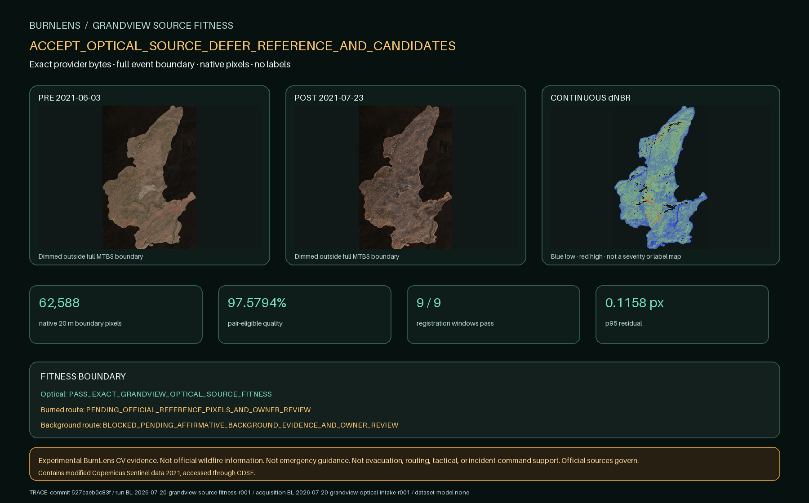

BURNLENS / PHASE TWO / ISSUE #495
Grandview optical pixels pass; labels do not.

Exact optical products
| Role | Sensing | Eligible | Review | Excluded |
|---|---|---|---|---|
grandview-2021-pre | 2021-06-03T19:02:10.753344Z | 100.0000% | 0.0000% | 0.0000% |
grandview-2021-post | 2021-07-23T19:02:11.84911Z | 97.5794% | 1.0337% | 1.3868% |
Continuous change
61,073 valid pixels; median dNBR 0.183221; p10/p90 0.060021 / 0.309093; 96.8857% positive change.
Continuous dNBR distribution is optical change evidence only; no threshold, severity class, burned label, or background label is assigned.
Reference identities—not pixels
| Program | Map ID | Boundary acres |
|---|---|---|
| BAER | 10019092 | 6,557 |
| MTBS | 10023989 | 6,187 |
| RAVG | 10019464 | 5,989 |
NOT_ACQUIRED_OR_OPENED_IN_THIS_RUN. These identities do not support a label decision.
Gate result
ACCEPT_OPTICAL_SOURCE_DEFER_REFERENCE_AND_CANDIDATES
- Optical: PASS_EXACT_GRANDVIEW_OPTICAL_SOURCE_FITNESS
- Burned candidate route: PENDING_OFFICIAL_REFERENCE_PIXELS_AND_OWNER_REVIEW
- Background candidate route: BLOCKED_PENDING_AFFIRMATIVE_BACKGROUND_EVIDENCE_AND_OWNER_REVIEW
- Unknown route: REQUIRED_AND_FEASIBLE_FROM_QUALITY_BOUNDARIES_AND_SOURCE_DISAGREEMENT
Contains modified Copernicus Sentinel data 2021, accessed through CDSE.
No new label, dataset, split, baseline, model, metric, field-validation, official, endorsed, operational, or emergency-ready claim exists.
Trace: commit 527caeb0c83fb70bdd0af37d11a1215914ca0be9 · BurnLens 0.39.0 · evidence run BL-2026-07-20-grandview-source-fitness-r001 · acquisition BL-2026-07-20-grandview-optical-intake-r001 · dataset/model none.